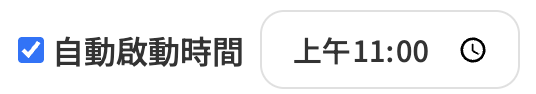
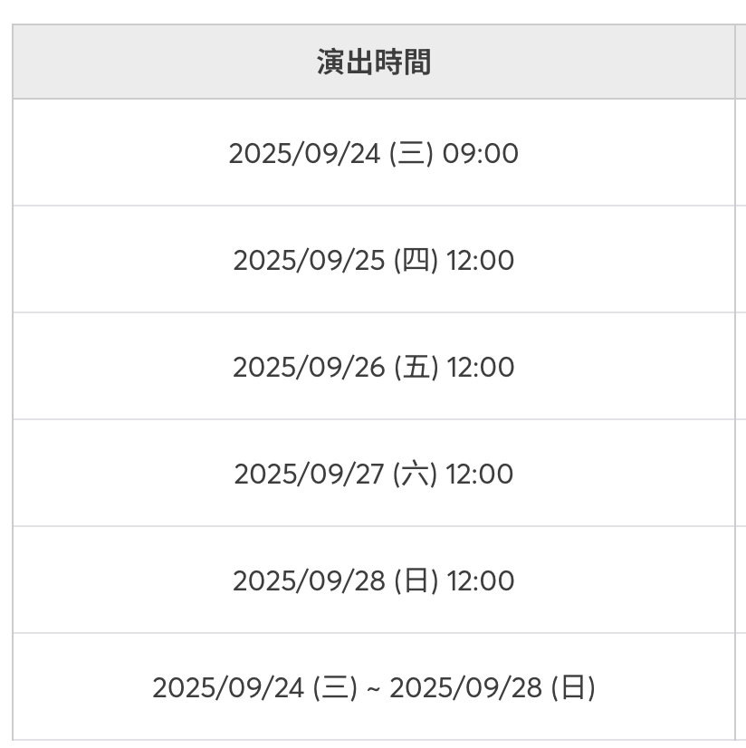
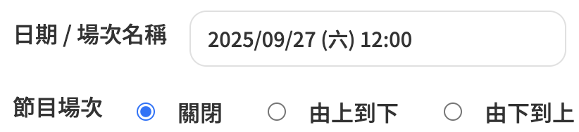
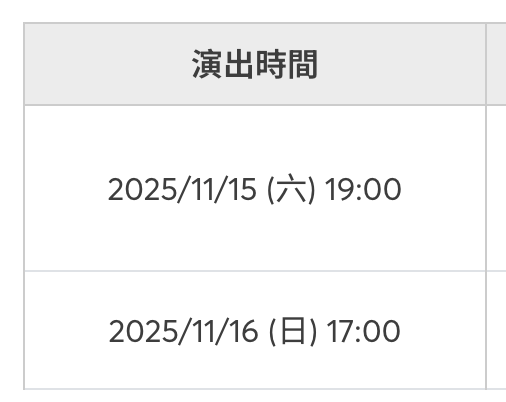
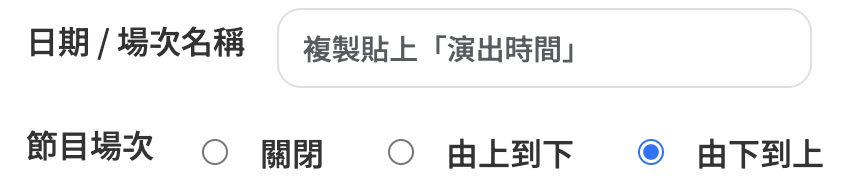
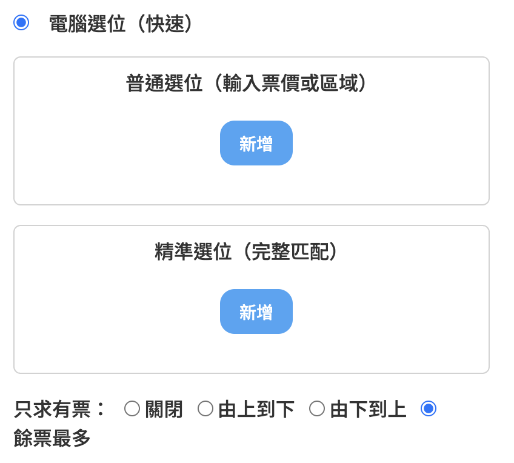
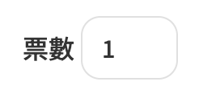
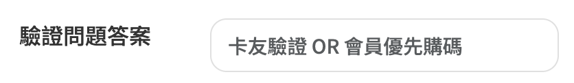
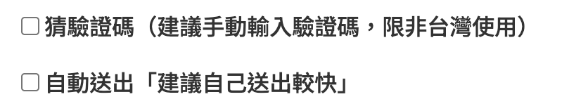
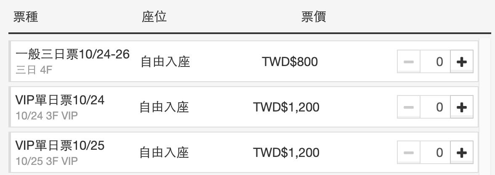

會員專區登入
此頁僅供已購買插件之用戶瀏覽。
若忘記密碼，請聯絡 LINE 客服。
會員專區
V2 操作教學
正在製作中…99%
V3 操作教學
-
步驟 1：在 V3 設定中開啟輔助功能。
若未勾選，將不會自動從
/detail跳轉至/game頁面。 -
 步驟 2：設定自動啟動的時間點，並儲存。
若售票時間為 上午 11:00:00 開賣，請直接設置為 上午 11:00。
系統會在剩餘約 5 秒時自動重新整理頁面，直至開賣並自動跳轉到選座位頁。
建議：若你人在電腦前，倒數剩 1 秒時可手動重新載入，以爭取刷新時機。
-
  步驟 3：選擇以「日期」或「場次名稱」為條件。
前提要件：該場演唱會有三場以上的節目，無法使用「上到下」或「下到上」來做選擇時，才使用！若兩場內，請看下面「步驟4」即可。
例如有三場以上，想要直接鎖定您想要的日期購票，日期輸入：
2025/09/27 (六) 12:00即可。 -
  步驟 4：若兩場內，請直接選用「上到下」 或 「下到上」即可。
系統將自動定位並選取符合條件的節目場次，也會忽略「選購一空」。
-
 步驟 5：選擇以「電腦選位（快速）」或「自定義選位」。
特別注意：若您有「自定義選位」輔助插件將優先選擇您所自定義座位，接下來才會是跑「只求有票」當中，您所設定的。
- 若您要選假設4300票價。請在精準選位輸入：4300（記得多加一個空白鍵）
- 若您要4300裡面的「特B區」請在普通選位輸入：特B區（不用多一個空白鍵）
- 若您是要一模一樣完整的「特B區4300」請在普通選位輸入：特B區4300（最前面以及最後面都不用空白鍵）
-
 步驟 6：選擇自己所需的「票券張數」
特別注意：注意售票系統的購票上限，不要超過嚕 ><
-
 步驟 7：事先輸入售票系統的驗證問題「卡友」 / 「會員優先購號碼」
-
 步驟 7：可自行判斷是否需要使用「猜驗證碼」、「自動送出」功能！
特別注意：（建議手動輸入驗證碼，限非台灣使用） ><
-
步驟 7：可自行判斷是否需要使用「刷釋出票」功能！
特別注意：（建議設2-5秒區間，比較不會顯示403 error） ><
KKTIX 操作教學
正在製作中…99%
特別說明「使用KK輔助插件」
-

- 若您想要隨機選票價。
請不用輸入任何東西即可，只要輸入你要的張數即可。 - 若您要選假設$1200票價。
請在「鎖定想要的票價 / 區域 / 座位（擇一即可）」輸入：TWD$1,200 優先順序: 1 - 若您要選$1200票價裡面的「VIP單日票10/25」
請在直接輸入：VIP單日票10/25 優先順序: 1 - 若您要選$1200票價裡面的VIP單日票10/25裡面的「10/25 3F VIP」
請在直接輸入：10/25 3F VIP 優先順序: 1 - 若您要選「圖片上這三個票價都要」請分別設定優先順序。
請在直接輸入：TWD$800 優先順序: 1
10/24 3F VIP 優先順序: 2
10/25 3F VIP 優先順序: 3
《請依照 票價最為優先 > 票種 > 區域，預祝各位能夠購買自己理想票券。》